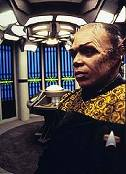
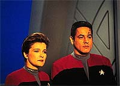
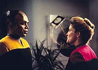
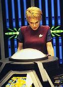
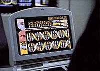
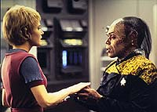

|
MANCHETE
DO EPISDIO
Mescla de personagens traz dilema
insolvel para a capit Janeway
Episdio
anterior | Prximo
episdio
Sinopse:
Data Estelar: 49655.2.
Em misso avanada para localizar suprimentos nutricionais, Tuvok
e Neeliz encontram uma orqudea nativa promissora. Mais tarde,
quando a tripulao os transporta de volta Voyager com amostras
das flores, a dupla no reaparece. Em vez deles, uma nica
entidade aparece na plataforma do transporte. O Doutor confirma que
esse estranho, e ainda assim familiar, aliengena na verdade uma
fuso de Tuvok e Neelix. Com todas as memrias e habilidades do
par, o novo membro da tripulao decide que seu nome seria "Tuvix".
 Os
oficiais seniores se reunem e concluem que as propriedades simbiogenticas
das orqudeas que a dupla carregava durante o transporte causaram a
"mescla" que criou Tuvix. Aps a reunio, Tuvix tenta se
ajustar a sua nova identidade, e Kes tenta se ajustar ao novo
colega. Embora ela seja atrada por ele, ele fica incomodada para
as emoes confusas que sente.
Aps Paris e Torres reunirem mais amostras da orqudea aliengena,
eles conseguem confirmar o mtodo da criao de Tuvix
transportando novas plantas hbridas, mas so incapazes de
reverter o processo. O Doutor admite que no est otimista sobre
trazer Tuvok e Neelix de volta como indivduos separados. Ao ouvir
isso, Kes sofre pela perda de dois homens: seu namorado e seu
mentor.
Kes diz a Janeway que, apesar das qualidades maravilhosas de Tuvix,
ela no est pronta para esquecer Neelix. Vrias semanas se
passam, e Tuvix se ajusta vida da nave. Em tempo, Kes se aproxima
dele e pede desculpas por estar distante. Quando parece que todos j
se ajustaram ao novo tripulante, o Doutor anuncia que criou um modo
de restaur-lo a seus dois componentes originais. S h um
problema: Tuvix no quer morrer, mesmo que signifique impedir que
outros dois homens vivam.
 Tuvix
argumenta que ele tem o direito de sobreviver, e que restaurar Tuvok
e Neelix significa execut-lo. O Doutor se recusa a tirar a vida de
Tuvix contra sua vontade, de modo que Janeway forada a assumir
a responsabilidade de executar o procedimento. Tuvok e Neelix so
restaurados, mas o alvio de Janeway contaminado pelo peso de
sua deciso de terminar com a vida de Tuvix.
Comentrios:
Uma premissa
pouco convincente convite para um desastre --o que no quer
dizer que ele sempre acontea. Na Srie Clssica, nos
cansamos de ver enredos ligeiramente forados, com o intuito de
alcanar uma discusso mais relevante e com maior potencial dramtico.
Esse exatamente o caso de "Tuvix".
 Os
malabarismos do transporte andam sendo utilizados como fonte de histrias
desde "The
Enemy Within", em que uma falha no equipamento divide o
capito Kirk em dois. Desta vez acontece justamente o contrrio: o
transporte transforma Tuvok e Neelix em um s ser.
Imagine o impacto de uma transformao dessa escala: no custa
muito para entender que a soma de Neelix e Tuvok, Tuvix, no
simplesmente um ou outro tripulante, ou mesmo os dois. Ao incorporar
as caractersticas dos dois em um s indivduo, Tuvix se tornou
uma pessoa diferente do que seus componentes iniciais eram. Para
todos os efeitos, Tuvix era um novo ser, e no simplesmente um
defeito no transporte, como bem indicou a capit Janeway.
A idia de reunir Tuvok e Neelix em um s ser muito boa, por vrias
razes. Em primeiro lugar, pelo antagonismo que sempre existiu
entre os dois personagens. Isso tornaria um desafio incrvel
mesclar suas caractersticas, produzindo resultados interessantssimos.
Em segundo lugar, pelo que os dois compartilham a bordo da Voyager
--Kes.
 Muito
mais do que um episdio sobre o Vulcano e o Talaxiano, este uma
histria sobre Kes. E a honestidade com que a personagem tratada
simplesmente espetacular. incrvel ver a Ocampa indo at a
capit Janeway, cheia de culpa e remorso por ter trado a confiana
de Tuvix, indo at ela simplesmente para pedir que ela traga Neelix
e Tuvok de volta, custa da vida do novo ser que havia sido
formado.
O discurso de Tuvix para defender sua sobrevivncia tambm incrvel.
Na confrontao final dele com Janeway, a sensao transmitida
pela cena, quando ele pede a cada um dos tripulantes que o salve,
a de que os oficiais da Voyager nem cogitavam a hiptese de salv-lo
--mas a expresso de todos eles quase dizia "Como somos egostas!
Vamos matar esse sujeito s para trazer nossos amigos de
volta!"
 Trocando
em midos, pela primeira vez os personagens foram retradados de uma
forma mais humana. De Janeway foi exigida uma deciso sobre um
problema em que no havia soluo correta. Ela tomou sua deciso,
e ningum capaz de julgar se ela estava certa ou no. Era um
teste de carter, e o argumento de que Neelix e Tuvok eram dois,
enquanto Tuvix era apenas um pode at parecer bom, mas por outro
lado devemos lembrar que, enquanto Tuvix estava vivo e bem, Tuvok e
Neelix estavam mortos --ou, pelo menos, sua existncia havia
cessado durante aquele perodo de tempo. No havia uma soluo
correta. Assim nasceu a primeira execuo vista em Jornada nas
Estrelas.
A atuao de Tom Wright como Tuvix , no mnimo, impressionante.
Alm de ter incorporado de forma incrvel os maneirismos de Tuvok
e Neelix, ele imprimiu uma vida ao personagem que rara de se ver.
Jennifer Lien tambm vai muito bem, em uma das poucas oportunidades
em que Kes teve a chance de mostrar servio. Os outros atores no
tiveram muito trabalho, mas desempenharam bem o que lhes foi pedido.
 Ao
final das contas, "Tuvix" prova que s vezes vale
a pena sacrificar a acurcia cientfica, se a histria a ser
contada consistente e vai falar fundo sobre nossa prpria
natureza. Independentemente do gosto do telespectador, ele h de
reconhecer que trata-se de um episdio bem pensado e bem escrito.
Para se apaixonar, entretanto, preciso ser mais afeito reflexo
do que ao, que faz alguma falta a esse segmento. Mas, se
faltou ao, com certeza sobrou emoo.
Citaes:
Tuvok - "Mr. Neelix, do
you think you could possibly behave a little less like yourself?"
("Sr. Neelix, o sr. acha que poderia agir um pouco menos como o
sr. mesmo?")
Trivia:
 Os astros falam:
Os astros falam:
Como a combinao com outro personagem o afetou?
- Tim Russ: Eu tirei a semana de folga. Achei a aparncia do novo
personagem incrvel e a atuao do ator excelente.
- Ethan Phillips: Bem, voc sabe, acho que voc sabe, estava lendo
em algum lugar que essa foi a primeira execuo mostrada em Jornada
nas Estrelas. E foi de fato uma execuo. E eu pessoalmente,
como telespectador do seriado, achei que foi forte, provavelmente,
matar Tuvix. Foi um acidente que transformou esse homem num ser
vivo. Ainda assim, ele era vivel, autntico, um verdadeiro indivduo.
E foi um triste acidente que aconteceu. De qualquer forma, foi assim
que o destino escolheu. E eu acho que Janeway estava errada em se
livrar dele. Ele tinha todos os grandes atributos de Neelix e todos
os grandes atributos de Tuvok. Mas, por outro lado, estou feliz que
ela tenha se livrado dele porque, se no o tivesse feito, estaria
procurando outro emprego. Ento uma coisa boa.
Ficha
tcnica:
Histria de Andrew Shepard Price
& Mark Gaberman
Roteiro de Kenneth Biller
Direo de Cliff Bole
Exibido em 06/05/1996
Produo: 040
Elenco:
Kate Mulgrew como
Kathryn Janeway
Robert Beltran como Chakotay
Roxann Biggs-Dawson como B'Elanna Torres
Robert Duncan McNeill como Tom Paris
Jennifer Lien como Kes
Ethan Phillips como Neelix
Robert Picardo como Doutor
Tim Russ como Tuvok
Garrett Wang como Harry Kim
Elenco convidado:
Tom Wright como Tuvix
Simon Billig como Hogan
Bahni Turpin como Swinn
Episdio
anterior | Prximo
episdio
|